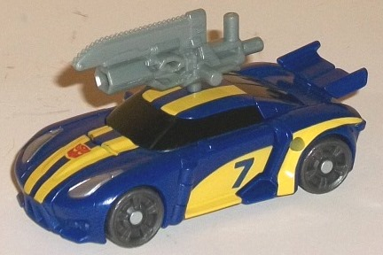
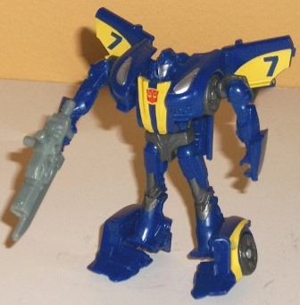
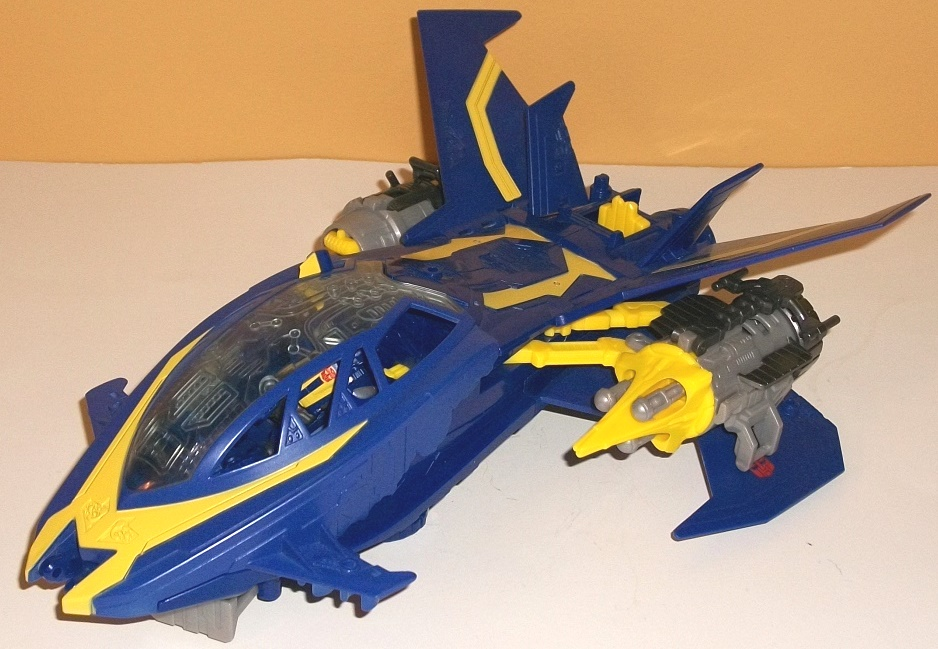
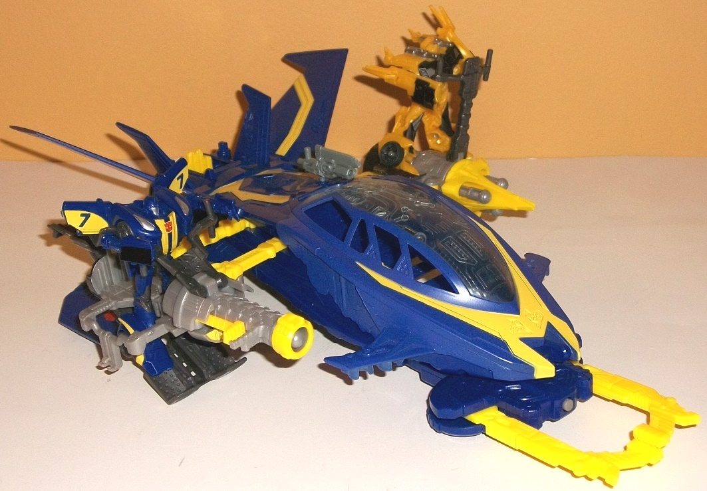

Allegiance
: Autobot
Size
: Cyberverse Vehicle Set
Difficulty of Transformation to Robot
:
Very Easy
Difficulty of Transformation of Vehicle
:
Very Easy
Color Scheme
: Dark blue, yellow,
light milky gray, and some dark charcoal gray, black, silver, dark metallic
gunmetal gray, clear plastic, and moderately light bluish gray
Figure Rating
: 7.6
Vehicle-Base Rating
: 8.6
(NOTE: Because part of this set is a repaint, this is not a full-blown review. This mainly covers any changes made to the mold and the color scheme, and merely compares it to the original Prime legion Smokescreen. For a review on the mold itself, read the review of the original Prime legion Smokescreen figure here .)


Smokescreen's color
scheme for the Sky Claw set is the same that he takes for most of the third
season of the show-- it's not an homage to anything that I'm aware of,
but it's a pretty slick scheme. The dark blue plastic is of a particularly
nice shade (perhaps with just a titch of purple mixed in there), and it
contrasts VERY well with the yellow paint apps. The stripes down the middle,
along with the curved designs on the sides with a blue "7" imprint, look
fantastic and really make this color scheme pop. The silver headlights
and paint on the face also make for a nice contrast color. One big plus
that you don't see much of these days is that Smokescreen's black paint
on his windows is actually painted on the REAR windows, too-- a rarity
especially at this scale, though they are so dark they tend to blend in
with the dark blue a little. The dark charcoal gray used for the wheels
and a few inner bits of the robot mode makes for a better dark color that
also contrasts with the dark blue well enough. Unfortunately, the paint
apps on Smokescreen are very much vehicle-focused, with his robot-specific
portions only getting some paint on the face-- this means that his robot
mode can be a bit overly dark blue without quite enough yellow or lighter
colors visible. Smokescreen comes with the standard chainsaw-gun weapon
that many other Legion-class Beast Hunters figures come with, the weapon
itself done up in a rather neutral bluish gray color.
No mold changes have
been made to this version of Smokescreen.


The "Sky Claw" is in
fact
Dreadwing's
ship from the show,
though for the toy it's been requisitioned as an Autobot spacecraft and
given to Smokescreen who is now in Dreadwing's colors. In vehicle mode,
the proportions are quite well-done, looking more or less exactly like
the spacecraft's brief appearance on the show. It follows the typical slightly-stylized
Prime aesthetic, with large spaces of relatively sparse mold detailing
(such as most of the top and wings) and small spaces of more intricate
mold detailing, like the quite cool-looking cockpit window with all sorts
of Cybertronian HUD-like details and fairly detailed side engines as well.
The angled wings in particular give this mode a dynamic appearance, and
its color scheme is very similar to Smokescreen's, so my comments about
the colors are roughly the same here-- they look quite good, with the yellow
stripes contrasting very well with the dominate color of dark blue. (The
dark blue on the cockpit piece isn't actually noticeably lighter than the
other colors as it appears in the above pics; darned camera lighting.)
There's also a bit of light and dark gray on the engines. These are certainly
fitting colors for the thrusters, but the light milky gray is always a
really blah color, and I wish had been a bit more metallic in its shading.
The cockpit top can fold open for you to put a Cyberverse-scaled figure
inside (though there isn't anything in there to keep the figure snug in
a particular position). It's large enough where Legion-class figures can
fit in, but larger figures can be a bit of a tight fit.
The Sky Claw's "base"
mode is really just a variation on the jet mode, with the "guns" and weapons
extendinh with a sliding back of the yellow lever on the back end and an
opening up of a few panels. On the left side, the engine becomes a rotary
missile launcher-- rotate back of this section and the missiles will shoot
forward from the yellow pointy front, one by one. On the right side, a
larger-barrel gun swings forward-- pressing forward on the yellow slider
on the side of the barrel causes the lone missile to shoot out. Finally,
a large claw rotates out from underneath the nosecone, with a gray slider
on the back of the contraption allowing you to open or close the claw.
(If the claw is opened all the way, a small gray gun will poke out the
front.) There's also flip-out handles for Transformers to "man" the side
engine-guns, though the right gun has an odd flip-down panel where the
TF should stand, which was a weird choice as it doesn't make for very stable
footing. Other than these modifications, this mode is the same as the jet
mode. There's also clips on the sides of the engine/guns to allow you to
connect the Sky Claw to other Cyberverse-scaled Prime vehicle sets, if
you desire to make one large base. One last thing of note; there's Cyberverse-scaled
weapon ports behind the cockpit, on the top of each small wing jutting
out near the front of the cockpit, and two on each of the large lower rear
wings, so you can pump up the Sky Claw a bit more with weaponry.
The Smokescreen w/ Sky Claw set is one of the best Prime Cyberverse vehicle sets out there, with a rock solid jet mode, some nice colors and detailing, and some nifty missile-firing and claw gimmicks, even if the "base mode" isn't remotely convincing. If you're at all interested in a Cyberverse vehicle set that's primarily a vehicle and not a big suit of armor , I'd recommend this one the most.
Review by Beastbot